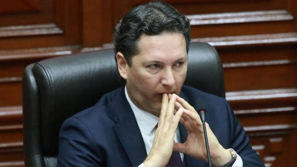
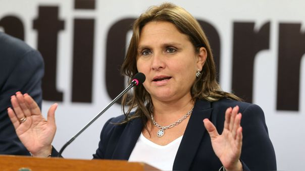
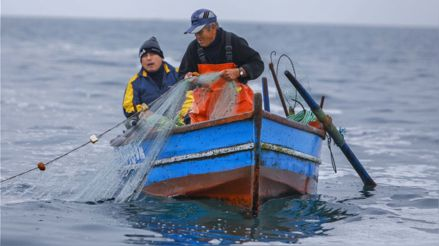

Mas Politica


Comisión del Congreso citó al ministro del Interior para este lunes 11 de julio por secuestro de periodistas en Cajamarca
La Comisión de Seguridad Ciudadana del Congreso citó al ministro Mariano González para este 11 de julio a fin de que explique las acciones adoptadas ante el secuestro de un equipo periodístico en la región Cajamarca.
Aprender Mas

Corte Suprema rechazó pedido de Daniel Salaverry para archivar presuntos delitos que le atribuye la Fiscalía en investigación
La Corte Suprema declaró infundado el recurso de excepción de improcedencia presentado por la defensa de Daniel Salaverry. Según determinó el juez supremo Juan Carlos Chekley, los hechos denunciados por el Ministerio Público contra el expresidente del Congreso constituyen presunto delito y son justiciables.
Aprender Mas

Marisol Pérez: "El Gobierno usa a las FF.AA. para que arreglen el problema de seguridad nacional y luego las desprestigian"
La exministra de Justicia consideró como "inaceptable" lo dicho por el Premier sobre las FF.AA. y señaló que el Mininter no se ha preocupado "por cosas sustantivas" para mejorar la seguridad nacional.
Aprender Mas
Zamir Villaverde pagó viajes aéreos a familiares de Pedro Castillo
La empresa del empresario, actualmente preso de manera preventiva por el caso Puente Tarata, compró pasajes aéreos a Cajamarca y Lima para los hermanos, el suegro, una sobrina y la concuñada del jefe de Estado, entre setiembre y noviembre del 2021, según información de El Comercio.
Aprender Mas

¿Por qué es importante proteger las 5 millas marinas?
Actualmente se debate una nueva Ley General de Pesca en la comisión de Producción. Uno de los puntos más importantes de la norma está relacionada a la protección de las cinco millas marinas.
Aprender Mas
CCFFAA lamenta las declaraciones de Torres: “Desvirtúan la abnegada labor que desempeñan nuestros integrantes”
El jefe del Gabinete criticó a la PNP y FF.AA. para defender a las rondas campesinas por el secuestro de periodistas de Cuarto Poder en Cajamarca. “Ya quisiéramos que brindaran la misma seguridad”, expresó.
Aprender Mas
Fiscalía pide a Presidencia informar si Yenifer Paredes viajó a Cajamarca en representación de Pedro Castillo o Lilia Paredes
El fiscal anticorrupción a cargo de la investigación a Yenifer Paredes también dispuso que se oficie a la empresa JJM Espino Ingeniería y Construcción para que informe si la joven tiene un vinculo laboral allí.
Aprender MasAlejandro Cavero defiende su informe que archiva denuncia contra Manuel Merino: "No me arrepiento"
"Tontos útiles aquellos que creen mentiras y que repiten en la opinión pública, en el Congreso, cosas sin evidencia y sin sustento", dijo el congresista de Avanza País frente a la críticas por su informe.
Aprender MasFiscalía incluyó a Norma Sánchez, esposa de Juan Silva, en investigación preliminar contra Zamir Villaverde por presunto lavado de activos
La fiscal Luz Taquire incluyó a Norma Sánchez Cordova, esposa del exministro de Transportes y Comunicaciones, Juan Silva, en la investigación preliminar seguida al empresario Zamir Villaverde y otros por presunto lavado de activos
Aprender Mas